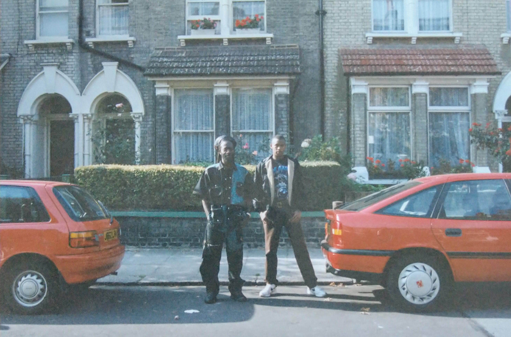

In Loving Memory
Celebrating the life of Kent Germain
Father, brother, friend, Rasta man, lion-hearted. A life rooted in Zion, family and community.
Memorial Tribute Video
A short remembrance clip is featured here for visitors arriving on the homepage.
Order of Service
From Selassie Is The Chapel to Lord Give Me Strength, the service was a tapestry of music, prayer and poetry honouring Kent’s journey.
View the full order of serviceRoots in Dominica & Zion
Kent’s story spans London streets, Caribbean rivers and the spiritual path of Rastafari. This tribute gathers those moments—family, football, drumming, and quiet strength.
Explore his life storyFamily, Friends & Wailers F.C.
Tributes from children, siblings, nieces, friends and Wailers F.C. share the impact of his words, humour and unwavering principles.
Read tributes & poems